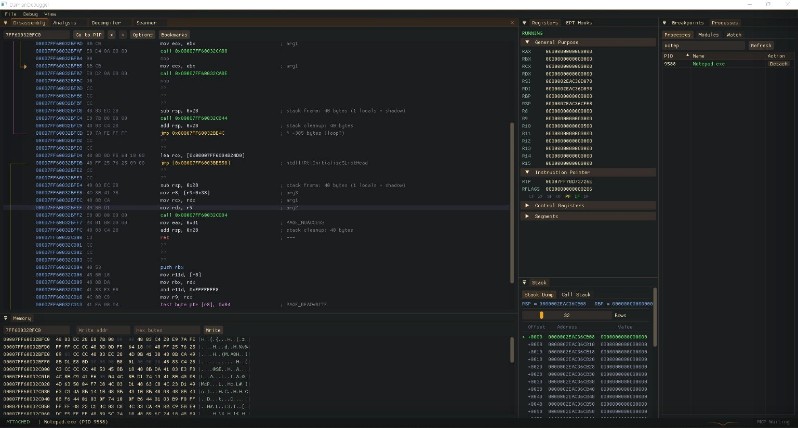

Damian Debugger

Damian Debugger는 디버거의 주요 기능을 Intel VT-x 기반 하이퍼바이저 계층에서 구현하는 것을 목표로 진행 중인 프로젝트입니다. 일반적인 사용자 모드 디버깅 API에만 의존하는 방식이 아니라, VM-exit과 EPT를 활용해 실행 흐름과 메모리 접근을 더 낮은 계층에서 관찰하는 구조를 공부하며 만들고 있습니다.
구현 과정에서는 VMX, VMCS, EPT, Windows 내부 구조를 먼저 정리하고, 기능 단위로 코드를 검토·수정·빌드·테스트하며 하이퍼바이저 기반 디버거 구조를 이해하고 있습니다.
- 하이퍼바이저 계층에서 실행 흐름을 관찰하는 디버거 구조 설계
- VM-exit 기반 이벤트 처리와 EPT hook을 이용한 메모리 접근 감시 흐름 학습
- 디스어셈블리, 레지스터, 메모리, 스택, 프로세스 상태를 한 화면에서 확인하는 분석 UI 구성
- 기능 단위 검토와 테스트를 통해 Windows 내부 동작과 디버깅 흐름 학습